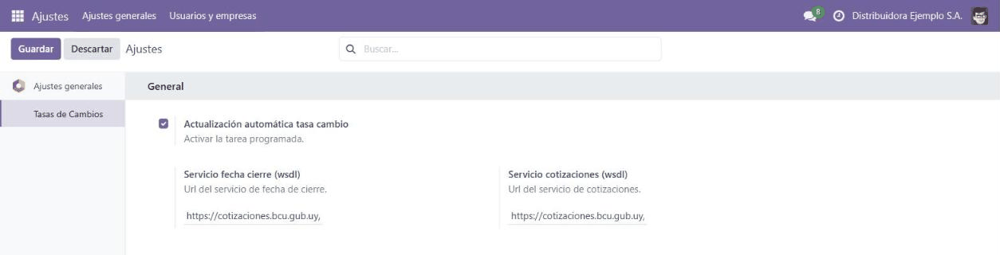

<section class="oe_container">
  <div class="oe_row oe_spaced" style="max-width:840px;margin:0 auto;padding:24px;font-family:Poppins,Arial,Helvetica,sans-serif">
    <div style="border-left:6px solid #0FA656;padding-left:18px;margin-bottom:18px">
      <h1 style="color:#1A252C;margin:0 0 6px;font-size:29px">BCU exchange rates updated on their own, every day</h1>
      <p style="color:#555;font-size:17px;margin:0;line-height:1.45">A daily task queries the official web services of the Central Bank of Uruguay and loads the rate of every active currency: US dollar, euro and the Indexed Unit.</p>
    </div>
    <p style="margin:0 0 20px;color:#333;line-height:1.6;font-size:15px">Working in pesos and dollars at the same time calls for an up-to-date exchange rate, and manual entry is one of those tasks that gets forgotten one day and shows up later in a badly valued invoice. This module <b>queries the official BCU web services once a day</b> and leaves the rates loaded in Odoo with nobody having to touch anything.</p>
<h2 style="color:#1A252C;font-size:21px;margin:26px 0 10px">What it does</h2>
<ul style="color:#333;line-height:1.7;font-size:15px;margin:0;padding-left:22px">
<li><b>Daily scheduled action</b> querying the official BCU web services (last closing and rates).</li>
<li>Loads the rate of <b>every active currency</b>: US dollar, euro and the Indexed Unit, all of them with the standard Odoo rate semantics.</li>
<li><b>Multi-company:</b> it loads the rates in every active company of the database.</li>
<li><b>Email alert</b> if the BCU returns no rate on a given day, so the gap does not go unnoticed.</li>
<li>Turned on and off from Settings, with nothing technical to touch.</li>
</ul>
<h2 style="color:#1A252C;font-size:21px;margin:26px 0 10px">The module on screen</h2>

<p style="margin:0 0 20px;color:#777;font-size:13px;line-height:1.45">Settings: daily BCU rate update / Ajustes: actualizaci&#243;n diaria de cotizaciones del BCU</p>
<h2 style="color:#1A252C;font-size:21px;margin:26px 0 10px">Who it is for</h2>
<ul style="color:#333;line-height:1.7;font-size:15px;margin:0;padding-left:22px">
<li>Any company running Odoo with operations in <b>Uruguayan pesos and dollars</b> (or euros, or contracts in Indexed Units) that loads the rates by hand today.</li>
</ul>
<h2 style="color:#1A252C;font-size:21px;margin:26px 0 10px">Frequently asked questions</h2>
<p style="margin:0 0 4px;color:#1A252C;font-size:15px"><b>Where do the rates come from?</b></p><p style="margin:0 0 12px;color:#333;line-height:1.6;font-size:15px">From the official web services of the Central Bank of Uruguay.</p>
<p style="margin:0 0 4px;color:#1A252C;font-size:15px"><b>Does it include the Indexed Unit?</b></p><p style="margin:0 0 12px;color:#333;line-height:1.6;font-size:15px">Yes: US dollar, euro and UI, as long as the currency is active in your database.</p>
<p style="margin:0 0 4px;color:#1A252C;font-size:15px"><b>What happens if the BCU publishes no rate on a given day?</b></p><p style="margin:0 0 12px;color:#333;line-height:1.6;font-size:15px">The module sends an email alert to the configured address, so you can load it by hand or wait for the next publication.</p>
<p style="margin:0 0 4px;color:#1A252C;font-size:15px"><b>Does it work with several companies in the same database?</b></p><p style="margin:0 0 12px;color:#333;line-height:1.6;font-size:15px">Yes, it loads the rates in every active company.</p>
<p style="margin:0 0 4px;color:#1A252C;font-size:15px"><b>Does it need anything else?</b></p><p style="margin:0 0 12px;color:#333;line-height:1.6;font-size:15px">The zeep Python library, used to talk to the BCU SOAP services. On Odoo Online it is already available; on your own server, install it with <b>pip install zeep</b>.</p>
<hr style="border:none;border-top:1px solid #DDE4E7;margin:26px 0"/>
<h2 style="color:#1A252C;font-size:23px;margin:0 0 6px">Cotizaciones del BCU actualizadas solas, todos los d&#237;as</h2>
<p style="color:#555;font-size:16px;margin:0 0 16px;line-height:1.45">Una tarea diaria consulta los servicios oficiales del Banco Central del Uruguay y carga la cotizaci&#243;n de todas las monedas activas: d&#243;lar, euro y Unidad Indexada.</p>
<p style="margin:0 0 20px;color:#333;line-height:1.6;font-size:15px">La operativa bimonetaria en pesos y d&#243;lares exige el tipo de cambio al d&#237;a, y la carga manual es de esas tareas que un d&#237;a se olvidan y aparecen en una factura mal valuada. Este m&#243;dulo <b>consulta los web services oficiales del BCU una vez por d&#237;a</b> y deja las cotizaciones cargadas en Odoo sin intervenci&#243;n de nadie.</p>
<h3 style="color:#1A252C;font-size:19px;margin:22px 0 10px">Qu&#233; hace</h3>
<ul style="color:#333;line-height:1.7;font-size:15px;margin:0;padding-left:22px">
<li><b>Tarea programada diaria</b> que consulta los web services oficiales del BCU (&#250;ltimo cierre y cotizaciones).</li>
<li>Carga la cotizaci&#243;n de <b>todas las monedas activas</b>: d&#243;lar, euro y Unidad Indexada, todas con la sem&#225;ntica de tasa est&#225;ndar de Odoo.</li>
<li><b>Multi-compa&#241;&#237;a:</b> carga las tasas en todas las compa&#241;&#237;as activas de la base.</li>
<li><b>Aviso por correo</b> si el BCU no devuelve cotizaci&#243;n un d&#237;a, para que la ausencia no pase inadvertida.</li>
<li>Se activa y desactiva desde Ajustes, sin tocar nada t&#233;cnico.</li>
</ul>
<h3 style="color:#1A252C;font-size:19px;margin:22px 0 10px">Para qui&#233;n es</h3>
<ul style="color:#333;line-height:1.7;font-size:15px;margin:0;padding-left:22px">
<li>Cualquier empresa en Odoo con operativa en <b>pesos uruguayos y d&#243;lares</b> (o euros, o contratos en Unidad Indexada) que hoy carga cotizaciones a mano.</li>
</ul>
<h3 style="color:#1A252C;font-size:19px;margin:22px 0 10px">Preguntas frecuentes</h3>
<p style="margin:0 0 4px;color:#1A252C;font-size:15px"><b>&#191;De d&#243;nde salen las cotizaciones?</b></p><p style="margin:0 0 12px;color:#333;line-height:1.6;font-size:15px">De los web services oficiales del Banco Central del Uruguay.</p>
<p style="margin:0 0 4px;color:#1A252C;font-size:15px"><b>&#191;Incluye la Unidad Indexada?</b></p><p style="margin:0 0 12px;color:#333;line-height:1.6;font-size:15px">S&#237;: d&#243;lar, euro y UI, siempre que la moneda est&#233; activa en su base.</p>
<p style="margin:0 0 4px;color:#1A252C;font-size:15px"><b>&#191;Qu&#233; pasa si el BCU no publica cotizaci&#243;n un d&#237;a?</b></p><p style="margin:0 0 12px;color:#333;line-height:1.6;font-size:15px">El m&#243;dulo env&#237;a un aviso por correo a la direcci&#243;n configurada, para que pueda cargarla o esperar la siguiente publicaci&#243;n.</p>
<p style="margin:0 0 4px;color:#1A252C;font-size:15px"><b>&#191;Funciona con varias compa&#241;&#237;as en la misma base?</b></p><p style="margin:0 0 12px;color:#333;line-height:1.6;font-size:15px">S&#237;, carga las tasas en todas las compa&#241;&#237;as activas.</p>
<p style="margin:0 0 4px;color:#1A252C;font-size:15px"><b>&#191;Necesita algo m&#225;s?</b></p><p style="margin:0 0 12px;color:#333;line-height:1.6;font-size:15px">La librer&#237;a Python zeep, que es la que habla con los servicios SOAP del BCU. En Odoo Online ya est&#225; disponible; en un servidor propio se instala con <b>pip install zeep</b>.</p>
<div style="background:#E9F7F0;border:1px solid #DDE4E7;border-radius:12px;padding:20px 22px;margin:28px 0 0">
      <h2 style="color:#1A252C;font-size:19px;margin:0 0 8px">Interested in this module?</h2>
      <p style="margin:0 0 10px;color:#333;line-height:1.6;font-size:15px">If you need it for another Odoo version, found a bug, or want to know more about us and our implementations, write to <a href="mailto:info@polpo.uy" style="color:#0FA656;text-decoration:none"><b>info@polpo.uy</b></a>, leave your question in our <a href="https://polpo.uy/contactus?utm_source=odoo_apps&amp;utm_medium=referral&amp;utm_campaign=qapps_currency_rate_bcu" style="color:#0FA656;text-decoration:none"><b>contact form</b></a> or see what we do at <a href="https://polpo.uy/?utm_source=odoo_apps&amp;utm_medium=referral&amp;utm_campaign=qapps_currency_rate_bcu" style="color:#0FA656;text-decoration:none"><b>polpo.uy</b></a>.</p>
      <p style="margin:0;color:#4a5a52;line-height:1.55;font-size:13px"><i>Si lo necesita en otra versi&#243;n de Odoo, encontr&#243; un error o quiere saber m&#225;s sobre nosotros, escr&#237;banos a info@polpo.uy o use nuestro formulario de contacto.</i></p>
    </div>
<hr style="border:none;border-top:1px solid #DDE4E7;margin:26px 0"/>
    <p style="color:#888;font-size:13px;margin:0">Developed by <a href="https://polpo.uy" style="color:#0FA656;text-decoration:none">Polpo ERP</a>, Odoo implementers from Uruguay for the whole region. Support: info@polpo.uy</p>
  </div>
</section>
